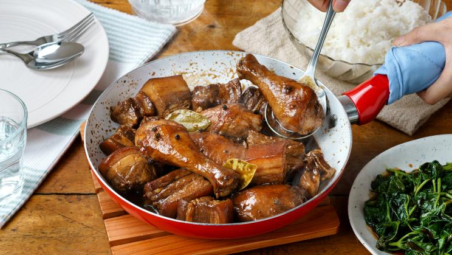

Home
Chicken Pork Adobo

Description
Adobo is considered as the signature dish of the Philippines. Almost all meats, seafood,and vegetables can be cooked using this method.
Chicken Adobo is an example of a famous adobo version that is gaining popularity around the world. This simple dish that once captured the palate of Filipinos is now
making its debut to the world’s kitchens.
Ingredients
- 1 1/2 lbs pork belly chopped
- 1 1/2 lbs chicken cut into serving pieces
- 4 pieces dried bay leaves
- 2 teaspoons whole peppercorn
- 1 head garlic slightly crushed
- 6 tablespoons vinegar white
- 1/2 cup soy sauce
- 1 tablespoon oyster sauce
- 2 teaspoons brown sugar
- 2 cups water
- Salt to taste
- 3 tablespoons cooking oil
Steps
- Heat oil in a pan
- Once the oil becomes hot, add the garlic. Cook until the color turns golden brown.
- Remove the garlic and set aside. Add pork and chicken. Cook for 5 minutes or until the color turns light brown.
- Add whole peppercorn, bay leaves, oyster sauce, soy sauce, and water. Let boil and simmer until the meat gets tender.
- Add the sugar and stir.
- Pour-in vinegar and let boil.Simmer until most of the liquid evaporates.
- Add salt to taste. Put-in the fried garlic, stir, and cook for 2 minutes.
- Serve. Share and enjoy!
Nutrition Information
Serving: 6g Calories: 927kcal (46%) Carbohydrates: 6g (2%) Protein: 34g (68%) Fat: 84g (129%) Saturated Fat: 27g (135%) Cholesterol: 167mg (56%) Sodium: 1284mg (54%) Potassium: 503mg (14%) Fiber: 1g (4%) Sugar: 2g (2%) Vitamin A: 210IU (4%) Vitamin C: 4mg (5%) Calcium: 45mg (5%) Iron: 2.6mg (14%)